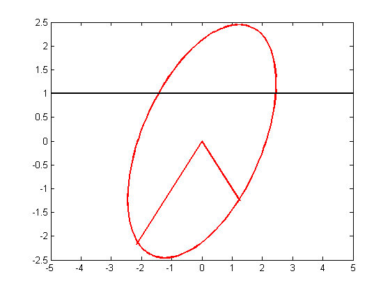
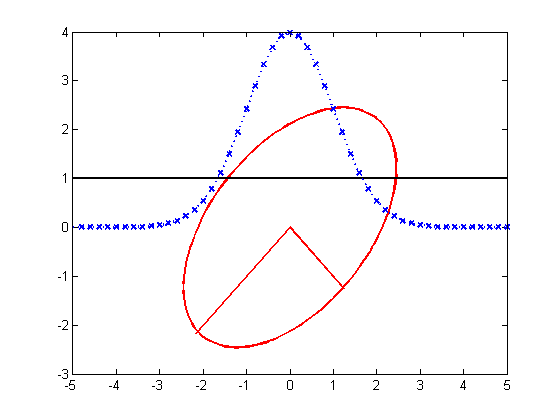
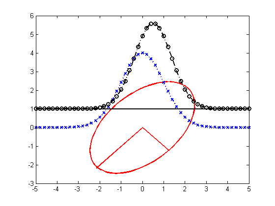
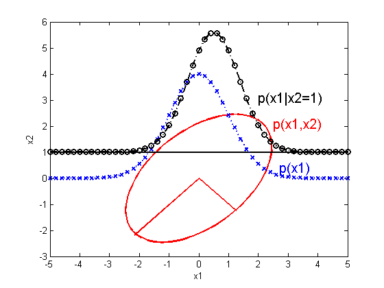

Conditioning a 2D Gaussian
Take a horizontal slice thru a 2d Gaussian and plot the resulting conditional
Contents
mu = [0 0]'; rho = 0.5; S = [1 rho; rho 1]; figure; gaussPlot2d(mu, S); hold on; [U,D] = eig(S); sf= -2.5; line([mu(1) mu(1)+sf*sqrt(D(1,1))*U(1,1)],[mu(2) mu(2)+sf*sqrt(D(1,1))*U(2,1)],... 'color','r','linewidth',2) line([mu(1) mu(1)+sf*sqrt(D(2,2))*U(1,2)],[mu(2) mu(2)+sf*sqrt(D(2,2))*U(2,2)],... 'color','r','linewidth',2) x2 = 1; line([-5 5], [x2 x2], 'color', 'k', 'linewidth', 2);
unconditional marginal
marg.mu = mu(1); marg.Sigma = S(1, 1); xs = -5:0.2:5; ps = gausspdf(xs(:), marg.mu, marg.Sigma); ps = 50*normalize(ps); plot(xs, 0+ps, 'bx:', 'linewidth',2 );
conditional marginals
model = struct('mu', mu, 'Sigma', S); modelHgivenV = gaussCondition(model, 2, x2); [muHgivenV, SigmaHgivenV] = structvals(modelHgivenV); ps = gausspdf(xs(:), muHgivenV, SigmaHgivenV); ps = 50*normalize(ps); plot(xs, 1+ps, 'ko-.', 'linewidth',2 ); postMu = muHgivenV;
grid off h=text(2.0, 3.1, 'p(x1|x2=1)'); set(h,'color','k','fontsize',15); h=text(2.5, 2.1, 'p(x1,x2)'); set(h,'color','r','fontsize',15); h=text(2.7, 0.4, 'p(x1)'); set(h,'color','b','fontsize',15); xlabel('x1'); ylabel('x2'); printPmtkFigure('gaussCond');